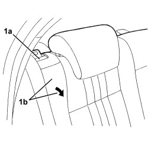
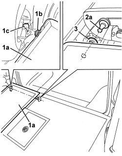

7050A15 SPLIT REAR SEAT RIGHT BACKREST - R.R.
- Path
- Procedures > 70 FITTINGS > 7050 REAR SEATS > 7050A REAR SEAT ASSEMBLY > 7050A15 SPLIT REAR SEAT RIGHT BACKREST - R.R.
- Kind
- repair procedure (removal / refitting; the operation number is the code)
- Applies to
- all engines; all production periods
- Interactive page
- https://sloeber94.github.io/elrnDB/#/939011329
Applies to: all engines; all production periods
 Removing
Removing
 Refitting
RefittingOp. 7050A20 ONE-PIECE REAR SEAT CUSHION - R.R.
1. Operate lever (1a) to release right backrest (1b), then fold forward to the end of its travel.

Applies to: all engines; all production periods
1. Slightly raise end (1a) of the backrest and disengage its side retainer (1b) from housing (1c).
2. Release backrest from centre pin (2a) and keep it.
3. Keep the washer.

Applies to: all engines; all production periods
Refitting
Removing- Check that the backrest is not damaged.
- Position the washer.
- Move the backrest, keeping it in a horizontal position, then attach it to the centre pin.
- Insert the backrest side retainer in its seat.
- Lift up the backrest to the end of its travel and and attach it to the retainer.
- Check that the fold-down backrest is working properly.
Topics linked from this page (1)
Topics that link to this page (9)
- O028 REAR SEAT BACKREST ATTACHMENT MISSING
- 7050A13 SPLIT REAR SEAT LEFT BACKREST - R.R.
- 7050A14 SPLIT REAR SEAT ASSEMBLY - R+R
- 7050A42 REAR BACKREST CATCH DEVICE (ONE) - R+R
- 7050A43 SPLIT REAR SEAT ABCKREST ATTACHMENT/LOCKING DEVICE - R.R.
- 7050A47 SIDE PANEL ONE OF REAR SEAT SQUAB LH OR RH R R
- 7050D34 TRIM FOR LEFT REAR SEAT BACKREST (TWO SEATER) - R.R.
- 7050D36 TRIM FOR RIGHT REAR SEAT BACKREST (INDIVIDUAL) - R.R.
- 7065B18 CENTRE REAR SEAT BELT - R.R.